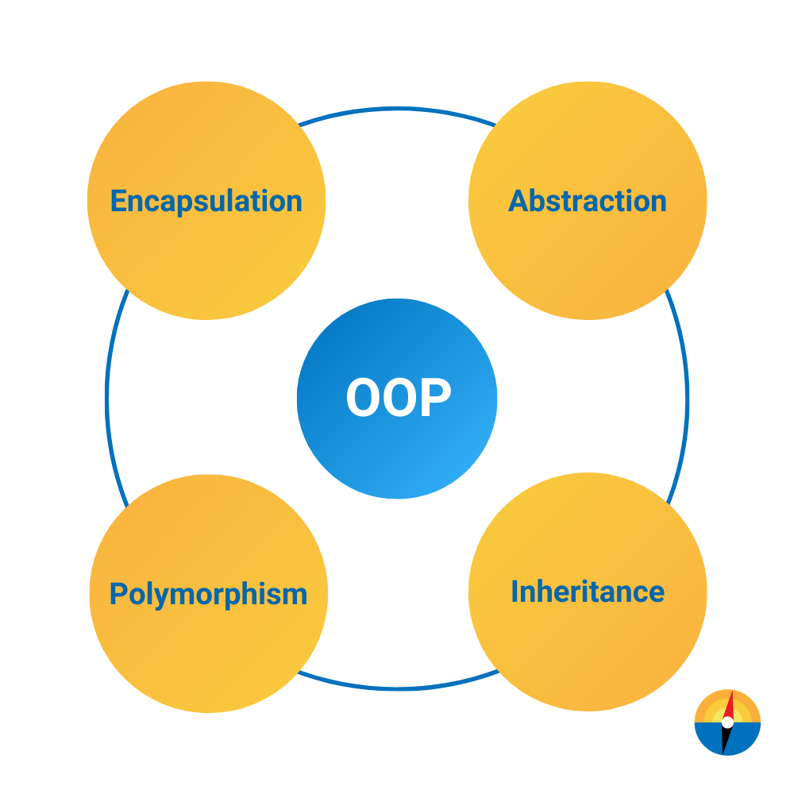

OOP stands for Object-Oriented Programming.Classes and objects are the two main aspects of object-oriented programming.
The main aim of OOP is to bind together the data and the functions that operate on them so that no other part of the code
can access this data except that function.
OOPs concepts are as follows:
- Abstraction
- Encapsulation
- Inheritance
- Polymorphism
- Compile-time polymorphism
- Runtime polymorphism

1. Abstraction :
Abstraction is a process of hiding implementation details and exposes only the functionality to the user. In abstraction,
we deal with ideas and not events.
This means the user will only know what it does rather than how it does. Ex: A car is viewed as a car rather
than its individual components.
There are two ways to achieve abstraction in Java
Abstract class (0 to 100%)
Interface (100%)
Consider a real-life example of a man driving a car. The man only knows that pressing the accelerators will increase
the car speed or applying brakes will stop the car,
but he does not know how on pressing the accelerator, the speed is actually increasing.
He does not know about the inner mechanism of the car or the implementation of the accelerators, brakes etc. in the car.
This is what abstraction is.
Certain key points should be remembered regarding this pillar of OOPS as follows:-
- The class should be abstract if a class has one or many abstract methods.
- An abstract class can have constructors, concrete methods, static method, and final method.
- Abstract class cannot be instantiated directly with the new operator. It can be possible as shown in pre tag below:
A b = new B();
- The child class should override all the abstract methods of parent else the child class should be declared with abstract
keyword
Example:
// Abstract class
public abstract class Car {
public abstract void stop();
}
// Concrete class
public class Honda extends Car {
// Hiding implementation details
@Override public void stop()
{
System.out.println("Honda::Stop");
System.out.println("Mechanism to stop the car using break");
}
}
public class Main {
public static void main(String args[])
{
Car obj = new Honda(); // Car object =>contents of Honda
obj.stop(); // call the method
}
}
2. Encapsulation :
It is defined as the wrapping up of data under a single unit. It is the mechanism that binds together the code and
the data it manipulates.
Another way to think about encapsulation is that it is a protective shield that prevents the data from being accessed
by the code outside this shield.
Real-Life Example:
A capsule which is mixed of several medicines. The medicines are hidden data to the end user.
In order to achieve encapsulation in java follow certain steps as proposed below:
- Declare the variables as private
- Declare the setters and getters to set and get the variable values
There are few advantages of encapsulation in java as follows:
- Control Over Data: We can write the logic in the setter method to not store the negative values for an Integer.
So by this way we can control the data.
- Data Hiding: The data members are private so other class can’t access the data members.
- Easy to test: Unit testing is easy for encapsulated classes.
Example:
// A Java class which is a fully encapsulated class.
public class Car
{
// private variable
private String name;
// getter method for name
public String getName()
{
return name;
}
// setter method for name
public void setName(String name)
{
this.name = name;
}
}
// Java class to test the encapsulated class.
public class Test
{
public static void main(String[] args)
{
// creating instance of the encapsulated class
Car car = new Car();
// setting value in the name member
car.setName("Honda");
// getting value of the name member
System.out.println(car.getName());
}
}
3. Inheritance :
Inheritance is an important pillar of OOP (Object Oriented Programming).
It is the mechanism in Java by which one class is allowed to inherit the features (fields and methods) of another class.
We are achieving inheritance by using extends keyword.
Inheritance is also known as is-a relationship.
Real-life Example:
The planet Earth and Mars inherits the super class Solar System and Solar system inherits the Milky Way Galaxy.
So Milky Way Galaxy is the top super class for Class Solar System, Earth and Mars.
Example:
// super class
class Car {
// the Car class have one field
public String wheelStatus;
public int noOfWheels;
// the Car class has one constructor
public Car(String wheelStatus, int noOfWheels)
{
this.wheelStatus = wheelStatus;
this.noOfWheels = noOfWheels;
}
// the Car class has three methods
public void applyBrake()
{
wheelStatus = "Stop" System.out.println("Stop the car using break");
}
// toString() method to print info of Car
public String toString()
{
return ("No of wheels in car " + noOfWheels + "\n" + "status of the wheels " + wheelStatus);
}
}
// sub class
class Honda extends Car {
// the Honda subclass adds one more field
public Boolean alloyWheel;
// the Honda subclass has one constructor
public Honda(String wheelStatus, int noOfWheels,Boolean alloyWheel)
{
// invoking super-class(Car) constructor
super(wheelStatus, noOfWheels);
alloyWheel = alloyWheel;
}
// the Honda subclass adds one more method
public void setAlloyWheel(Boolean alloyWheel)
{
alloyWheel = alloyWheel;
}
// overriding toString() method of Car to print more info
@Override public String toString()
{
return (super.toString() + "\nCar alloy wheel " + alloyWheel);
}
}
// driver class
public class Main {
public static void main(String args[])
{
Honda honda = new Honda(3, 100, 25);
System.out.println(honda.toString());
}
}
4. Polymorphism :
Polymorphism is the ability to perform many things in many ways.
The word Polymorphism is from two different Greek words- poly and morphs.
Poly means many, and Morphs means forms. So polymorphism means many forms.
It can be present in the case of inheritance also. The functions behave differently based on the actual implementation
Real-life Example:
A delivery person delivers items to the user. If it is a postman he will deliver the letters.
If it is a food delivery boy he will deliver the foods to the user.
Like this polymorphism implemented different ways for the delivery function.
There are two types of polymorphism as listed below:
1. Static or Compile-time Polymorphism
2. Dynamic or Run-time Polymorphism
Static or Compile-time Polymorphism when the compiler is able to determine the actual function,called compile-time polymorphism.
Compile-time polymorphism can be achieved by method overloading in java.
When different functions in a class have the same name but different signatures, it’s called method overloading.
A method signature contains the name and method arguments. So, overloaded methods have different arguments.
The arguments might differ in the numbers or the type of arguments.
Example 1: Static Polymorphism
public class Car
{
public void speed()
{
}
public void speed(String accelerator)
{
}
public int speed(String accelerator, int speedUp) {
return carSpeed;
}
}
Dynamic or Run-time Polymorphism occurs when the compiler is not able to determine
whether it’s superclass method or sub-class method it’s called run-time polymorphism.
The run-time polymorphism is achieved by method overriding.
When the superclass method is overridden in the subclass, it’s called method overriding.
Example 2: Dynamic Polymorphism
import java.util.Random;
class DeliveryBoy {
public void deliver() {
System.out.println("Delivering Item");
}
public static void main(String[] args) {
DeliveryBoy deliveryBoy = getDeliveryBoy();
deliveryBoy.deliver();
}
private static DeliveryBoy getDeliveryBoy() {
Random random = new Random();
int number = random.nextInt(5);
return number % 2 == 0 ? new Postman() : new FoodDeliveryBoy();
}
}
class Postman extends DeliveryBoy {
@Override
public void deliver() {
System.out.println("Delivering Letters");
}
}
class FoodDeliveryBoy extends DeliveryBoy {
@Override
public void deliver() {
System.out.println("Delivering Food");
}
}
Output:
Delivering Letters